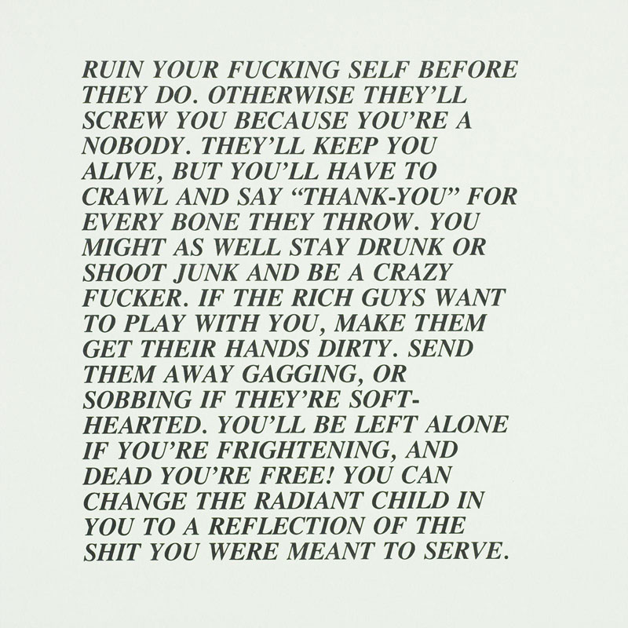

## How has digital media influenced publishing?
The web has made it so easy to publish online – anyone can be a producer or curator of content. Social media encourages this. The more you form your thoughts in public, create content and maintain your brand, the more attention you give and revenue you create.
### Drinking from a firehose There's too much information but no time or attention to be able to understand it.
### Context collapse In a limited group, a person is constantly adjusting their tone and presentation of self to fit into the social context. Online, this becomes impossible – behaviors and materials intended for a limited audience can suddenly clash with parts of the wider audience they actually receive.
#### Scrolling through the feed, I can’t help but wonder: What am I supposed to think of all this? How am I supposed to think of all this? I imagine different parts of my brain lighting up in a pattern that doesn’t make sense, that forecloses any possible understanding. Many things in there seem important, but the sum total is nonsense, and it produces not understanding but a dull and stupefying dread. Jenny Odell, How to Do Nothing
### Emergent publishing platforms New tools, applications and infrastructures have led to a wide range of emergent publishing practices: longreads, vlogs, zines, newsletters, collaborative platforms or print-on-demand.
### How does the platform itself shape and contextualise the meaning of content?
#### With an unprecedented amount of available text, our problem is not needing to write more of it; instead, we must learn to negotiate the vast quantity that exists. How I make my way through this thicket of information—how I manage it, parse it, organize and distribute it—is what distinguishes my writing from yours. Kenneth Goldsmith, Uncreative Writing
As a graphic designer working on the web, you should become adept at negotiating different platforms and social networks, understanding how information moves across these networks, how context is created by different tools and different communities.
## Republish a text
## Step 0 Choose a text or composition whose copyright has expired, or that has a creative commons copyright. Ubuweb, Open Library, and Monoskop are good sources. For your own sake, the text or composition should be no more than a few pages. (15 minutes)
## Step 1 Republish or process the composition through an online service such as YouTube, Flickr, Vimeo, Vine, Instagram, Twitter, Tumblr, Facebook, Google Docs, Second Life, Google Earth, World of Warcraft, Yahoo Answers, Craigslist, etc… Make sure your text is publicly available or document it by taking screenshots. (60 minutes)

### Examples - [Christian Marclay's The Clock](https://www.youtube.com/watch?v=BXbQw0rE5UE) - [Geo Goo](http://geogoo.net/) by JODI, 2007, with more info [here](http://www.wordsinspace.net/media-materiality/2012-spring/?p=1091/) - [Mr. Plimpton's Revenge](http://tinyurl.com/plimptonmap) by Dinty W. Moore, 2010 - [Postcards from Google Earth](http://clementvalla.com/work/postcards-from-google-earth/) by Clement Valla, 2010–ongoing - [Hypergeography](http://hypergeography.tumblr.com/) by Joe Hamilton, 2011 - [Do Not Touch](http://donottouch.org/) by Moniker, 2013 - [Craigslist-Assisted Readymade](https://chrome.google.com/webstore/detail/craigslist-assisted-ready/mljomhgealchkbdmladniogahbefajcd) by Adriana Ramić, 2011 - Real Taylor Swift Quotes by Emily Patterson, [here](http://www.themarysue.com/hitler-swift-pinterest/#geekosystem) and [here](http://www.buzzfeed.com/ailbhemalone/a-pinterest-user-has-been-attributing-hitler-quotes-to-taylo#.lgo8Gj3kzz) - [We Think Alone](http://wethinkalone.com/) by Miranda July, 2013 - [American Psycho](http://jason-huff.com/projects/american-psycho/) by Jason Huff and Mimi Cabell - [Dronestagram](https://www.instagram.com/dronestagram/?hl=en) by James Bridle, 2012–2015 - [Excellences and Perfections](http://webenact.rhizome.org/excellences-and-perfections/) by Amalia Ulman, 2014, with more info [here](http://rhizome.org/editorial/2014/oct/20/first-look-amalia-ulmanexcellences-perfections/) - [Kool Aid Man in Second Life](http://koolaidmaninsecondlife.com/) by Jon Rafman, 2009 - [@wwwtext](https://twitter.com/wwwtxt) by Daniel Rehn - [@horse_ebooks](https://twitter.com/horse_ebooks) by Jacob Bakkila and Thomas Bender, 2009, with more info [here](http://www.newyorker.com/magazine/2014/02/10/man-and-machine-2) - [Darius Kazemi](http://tinysubversions.com/)'s Twitter Bots - Anagramatron on [twitter](https://twitter.com/anagramatron) and [tumblr](http://anagramatron.tumblr.com/) by [CMYR](http://www.cmyr.net/)
Is it a work that viewers might encounter through serendipity/chance, or a work that viewers must seek out and assemble themselves? How can you translate your text and tell the story in a new way, can you add another layer to the author’s work? Do you keep your text intact? Do you need words to retell the story of the text, or images, or sound, or a combination?
How will the reading of the text be affected by the choice of platform? For example, does the Tumblr community create a different context for writing and images than the Second Life community?
How are texts broken up? In 140 character blurbs? In longer sequences? How does each piece of text link to the next? Are there different voices you can use? Can the text be broken up into sequential sections? What about parallel sections? How does the text look on the page?
How do all these elements affect your reading of the text? How many of these elements can you control? What can't you control? What is the typical way we read text on the service you are using? Are you interrupting this ‘usual’ read and using it to your advantage?